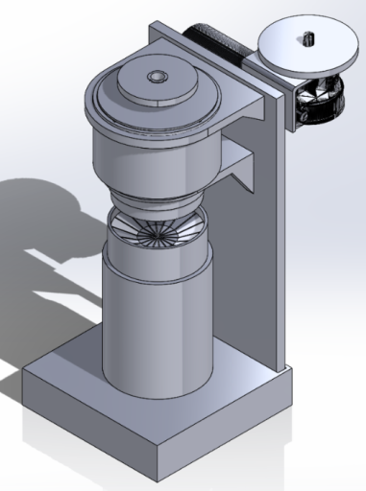
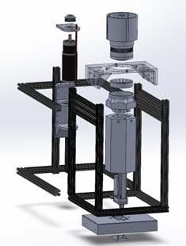
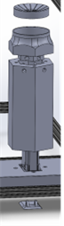
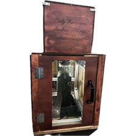
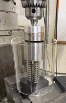
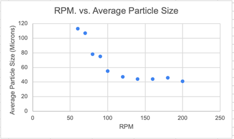

Introduction
The Matcha Mill project aims to design and manufacture a commercial matcha mill that allows baristas to mill fresh matcha to order. Current solutions are inefficient, expensive, and not designed for single-dose grinding. This project addresses the need for an affordable, effective, and barista-friendly matcha mill to improve the freshness, flavor, and aroma of matcha served in coffee shops.
In this project, I was mainly responsible for testing, modeling, and assembly. My work focused on building and refining the machine, helping develop the CAD and assembly layout, and validating performance through testing of force, RPM, grind time, interval strategy, and overall operation.
Figure 8: Isometric View of Assembly
The matcha mill is designed as a modular, vertically integrated grinding system optimized for single-dose, cafe scale operation.

Presentation: Prototypes
Initial and final prototype progression.
Comprehensive Design
The primary subsystems include a lead screw driven linear actuator for controlled axial loading, a removable frustum conical grinding head and base for particle size optimization, an integrated belt transmission system for torque transfer, and a rigid aluminum T-frame that maintains alignment under load. This design enables precise control of applied force, rotational speed and grinding duration. These three parameters are critical for achieving consistent particle sizes within the 5-10 micron target range while maintaining temperatures below degradation thresholds.
The system layout prioritizes both performance and usability by separating high load mechanical components from user interaction interfaces. The removable grinding bowl and head assembly allow rapid loading, unloading, and cleaning without disassembly of the full system, while the belt driven transmission isolates motor vibrations from the grinding interface. During this part of the project, my main contribution was modeling and assembly of the mechanical system.

Figure 10: Exploded View of Assembly
Output gear, input gear, weighted pillar, center rod, motor bracket, grinding head, T-frame, bowl, actuator base or sleeve, gear separator, support frame, grinding bowl base, and stainless steel grinding plates.

Figure 13: Linear Actuator/Thrust Bearing Assembly
A thrust bearing assembly redirects axial grinding loads directly into the stainless steel grinding plates, ensuring smooth rotational motion while preventing excessive stress on the motor, belt system and structural components.

Figure 24: Wooden Enclosure
A fully enclosed wooden housing surrounds the mechanical and electrical systems, protecting users from accidental contact with moving components while also providing electrical insulation, reducing exposure to dust and debris, and offering sound dampening benefits.
Testing and Performance
Variables tested included force, RPM, head design, surface finish, time, and temperature. The testing setup used a triple spring setup connected to the grinding base. This allowed displacement to be measured and the amount of force applied to be calculated. This setup was used to determine the best speed to apply into the matcha mill.
Testing confirmed that the target particle size range of 5-10 microns was achieved. The optimal configuration was 15 kg of applied force, a total grind time of 3 minutes, 1-minute intervals with bowl tapping between cycles, and a speed of 120 RPM. My main contribution in this phase was testing the machine and using the results to guide refinement of the final design and assembly.
To further evaluate the final grind quality, tiny matcha particles were examined under a microscope and reviewed using Gryphax imaging software. This gave a closer look at particle distribution and helped confirm whether the grinding setup was producing the fine, consistent powder needed for the target matcha texture. The microscope image below shows the particle field used as part of that evaluation.
Presentation: Assembly
Key components include the thrust bearing assembly, base lifting mechanism, and power transmission.

Figure 15: Manual Mill Testing Setup
The setup above shows the testing setup used to determine which force, RPM, and time needed to grind down to particle size.

Figure 18: RPM vs. Average Particle Size
The grinding head RPM versus the corresponding average particle size showed that 120 RPM was the lowest usable RPM that provided the most optimal results.

Microscope Particle Evaluation
Microscope image used to evaluate very small matcha particles with Gryphax and compare particle consistency after grinding.
Conclusion
The Matcha Mill project successfully demonstrates the feasibility of producing fresh, cafe-quality matcha on demand through a compact, user-focused mechanical system. Performance testing confirmed that the machine consistently achieves the target particle size range of 5-10 micrometers while maintaining a controlled temperature rise below 2 degrees Celsius per grinding cycle.
Experimental results showed 120 RPM, 15 kg of applied force, and a 3-minute total grind time using interval-based systems as the optimal configuration for balancing grinding efficiency, mechanical reliability, and uniform particles. From a usability standpoint, the Matcha Mill meets its design goal of being easy to use for baristas, requiring minimal training and integrating into typical coffee shop workflows.